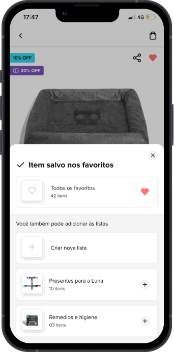
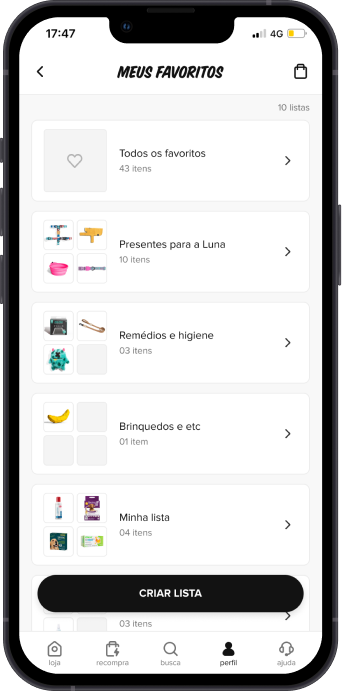
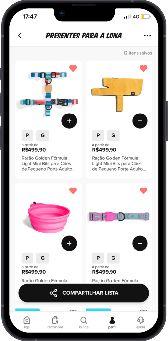
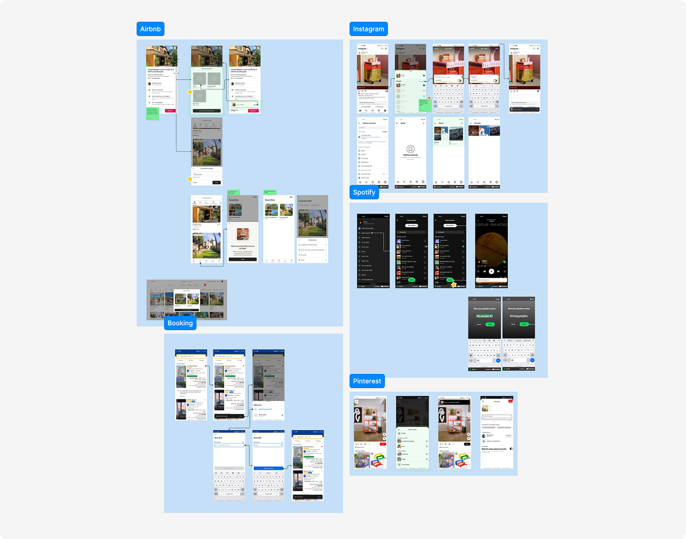
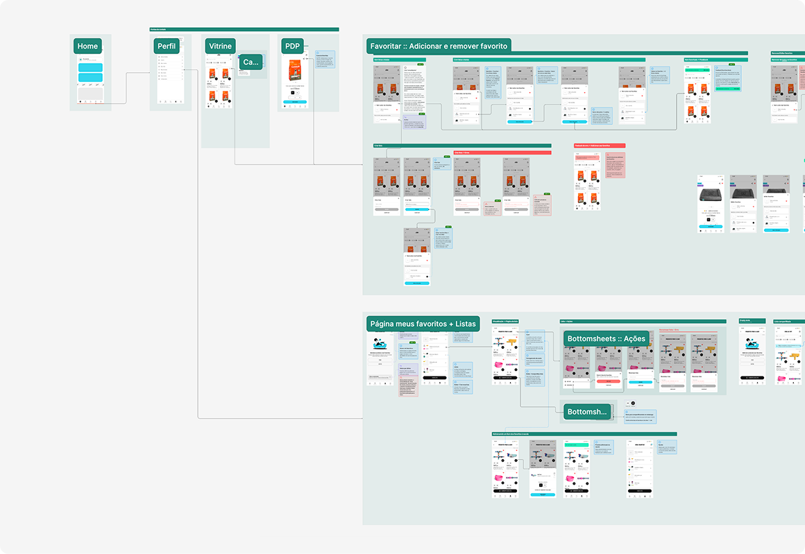

Zee.Now
Favoritos Favorites
Organização e rapidez para facilitar a recompra de itens recorrentes Organization and speed to make repurchasing recurring items easier
Contexto Context
A Zee.Now, pet shop online da Zee.Dog, passava por um reposicionamento estratégico para se tornar não apenas a entrega mais rápida, mas também a experiência de compra mais rápida. O app já contava com um botão de recompra, que permitia adicionar rapidamente itens comprados anteriormente ao carrinho. No entanto, essa funcionalidade não atendia usuários que queriam organizar produtos recorrentes ou salvar itens para compras futuras. Zee.Now, Zee.Dog's online pet shop, was going through a strategic repositioning to become not just the fastest delivery, but also the fastest shopping experience. The app already had a repurchase button that let users quickly add previously bought items to the cart. That feature, however, did not serve users who wanted to organize recurring products or save items for future purchases.
As compras na Zee.Now são, em grande parte, recorrentes e compostas por itens essenciais do dia a dia. A ausência de uma lógica de listas gerava fricção para usuários que desejavam mais controle e agilidade no processo de recompra. A funcionalidade de Favoritos surgiu para preencher essa lacuna, permitindo salvar e organizar produtos de forma simples, rápida e consistente com a experiência do app. Purchases on Zee.Now are largely recurring and made up of everyday essentials. The absence of any list logic created friction for users who wanted more control and speed when repurchasing. The Favorites feature emerged to fill that gap, letting people save and organize products in a way that is simple, fast, and consistent with the app experience.
Problema Problem
Usuários precisavam refazer buscas ou depender apenas da recompra direta, sem possibilidade de organizar produtos por contexto ou preferência. Isso gerava fricção em uma jornada que deveria ser simples, rápida e eficiente. Users had to redo searches or rely solely on direct repurchase, with no way to organize products by context or preference. This created friction in a journey that should have been simple, fast, and efficient.
Objetivo Goal
Criar uma funcionalidade que permitisse salvar e organizar produtos recorrentes em listas, garantindo acesso rápido, clareza e consistência visual, alinhada à identidade da marca e às restrições técnicas do app. Create a feature that would let users save and organize recurring products into lists, ensuring fast access, clarity, and visual consistency, aligned with the brand identity and the app's technical constraints.
Meu papel My role
Atuei como Product Designer, sendo responsável pelo discovery, definição da solução, desenho de fluxos, prototipação e alinhamento contínuo com os times de Produto, Negócio e Tecnologia. I worked as Product Designer, responsible for discovery, solution definition, flow design, prototyping, and ongoing alignment with the Product, Business, and Technology teams.



O processo The process
Benchmarking
Realizamos uma análise de produtos digitais que trabalham bem com o comportamento de salvar itens e recompra, como Amazon, Spotify, Mercado Livre, Airbnb e Pinterest. O objetivo foi identificar padrões de uso, estruturas de listas e boas práticas de usabilidade aplicáveis ao contexto da Zee.Now. We analyzed digital products that handle saving items and repurchasing well, such as Amazon, Spotify, Mercado Livre, Airbnb, and Pinterest. The goal was to identify usage patterns, list structures, and usability best practices applicable to Zee.Now's context.

Mapeamento de jornada e fluxos Journey and flow mapping
Mapeamos a jornada principal: salvar produto → acessar lista → adicionar ao carrinho → finalizar compra, com foco em reduzir cliques e esforço cognitivo. Como a solução permitiria a criação de listas, foi necessário desenhar subfluxos que garantissem uma experiência robusta, porém simples, mantendo clareza em cada etapa. We mapped the core journey: save product → open list → add to cart → check out, focused on reducing clicks and cognitive effort. Since the solution would allow users to create lists, we had to design sub-flows that kept the experience robust yet simple, staying clear at every step.
Prototipação Prototyping
Desenvolvi protótipos de baixa a alta fidelidade no Figma para validar fluxos, hierarquia da informação e interações, sempre considerando consistência visual com o app e viabilidade técnica. I built low-to-high-fidelity prototypes in Figma to validate flows, information hierarchy, and interactions, always weighing visual consistency with the app and technical feasibility.

Desafios durante o processo Challenges along the way
O principal desafio foi conciliar diferentes visões entre os times de negócio e produto, que geraram ajustes frequentes ao longo do processo. Isso exigiu flexibilidade, negociação e priorização constante para garantir que as decisões mantivessem o foco na experiência do usuário sem comprometer objetivos estratégicos. Como consequência, o prazo do projeto foi estendido, reforçando a importância de critérios claros de decisão. The main challenge was reconciling different views between the business and product teams, which led to frequent adjustments throughout the process. This required flexibility, negotiation, and constant prioritization to keep decisions focused on the user experience without compromising strategic goals. As a result, the project timeline was extended, reinforcing the importance of clear decision criteria.
Resultados Results
A funcionalidade de Favoritos foi lançada em uma primeira versão, permitindo que usuários salvassem e organizassem produtos para recompra de forma mais rápida e intuitiva. Embora não tenham sido realizados testes de usabilidade formais antes do lançamento, o fluxo passou por diversas iterações internas para garantir qualidade e clareza. The Favorites feature launched in a first version, letting users save and organize products for repurchase more quickly and intuitively. Although no formal usability testing was carried out before launch, the flow went through several internal iterations to ensure quality and clarity.
Resultados e próximos passos Results and next steps
Os próximos passos envolvem acompanhar o comportamento dos usuários e analisar dados de uso para orientar otimizações da experiência. Métricas como adoção da funcionalidade, engajamento com listas e conversão de itens favoritados em compras servirão de base para futuras iterações. Podemos medir o sucesso da feature por meio de algumas métricas-chave: Next steps involve tracking user behavior and analyzing usage data to guide improvements to the experience. Metrics such as feature adoption, engagement with lists, and conversion of favorited items into purchases will inform future iterations. We can measure the feature's success through a few key metrics:
Adoção da feature Feature adoption
- % de usuários que favoritaram pelo menos um item % of users who favorited at least one item
- % de usuários que criaram pelo menos uma lista % of users who created at least one list
Engajamento Engagement
- Número médio de listas por usuário Average number of lists per user
- Número médio de itens por lista Average number of items per list
- Frequência de acesso às listas (diária, semanal, mensal) How often lists are opened (daily, weekly, monthly)
Impacto no comportamento de compra Impact on purchase behavior
- Taxa de conversão de itens favoritados para compra Conversion rate from favorited item to purchase
- Tempo médio entre favoritar e comprar Average time between favoriting and buying
- Ticket médio de compras de itens favoritados vs. não favoritados Average order value for favorited vs. non-favorited items